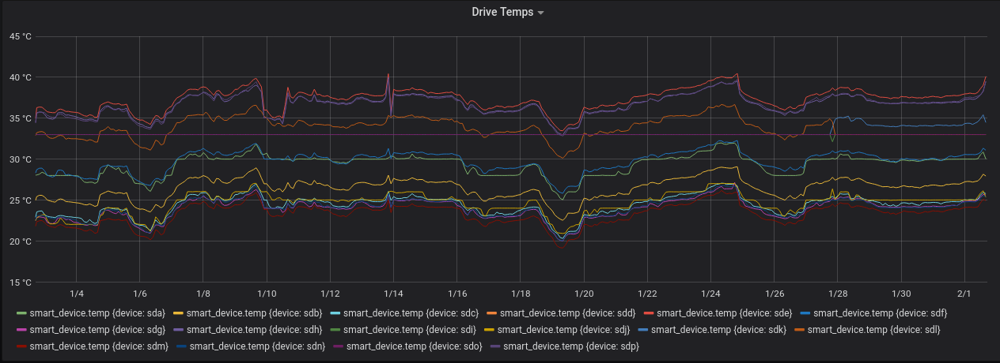

Homelab Act 4: Services and Applications
For the last 192 days (according to uptime on one my routers), I've been setting up a small homelab. Homelabs are kind of cool, and, the setup has been interesting. I'll be writing a few posts explaining the steps I took.
- Part 1 VPN setup
- Part 2 Servers and 10GbE
- Part 3 NAS, ZFS, and NFS
- Part 4 (this post)
Now that I have a VPN, a server, a "desktop computer" connected to the server over a fast network, and fast storage, I should do something useful.
Administration Tools
InfluxDB, Grafana, and Telegraf
These tools are useful for general system monitoring.
Also, grafana plots are really pretty: 
I'm also a fan of using these tools to report your own metrics from your own small applications. You can very easily write stats to output files then jam them through telegraf to collect them and produce plots. See https://github.com/influxdata/telegraf/blob/master/docs/DATA_FORMATS_INPUT.md.
healthchecks.io for alerting
healthchecks.io is an altering service that sends alerts through email, slack, etc when it hasn't received a ping recently enough. You can run the open-source software yourself, or use a hosted version.
To set it up, you register a number of "checks" and assign each check a schedule:
Sending updates is also trivial; I just use use curl to send "stating", "failed," and "succeeded" messages from a shell script:
#!/bin/bash set -o pipefail # don't set -e because we want failure to make it all the way to the end, not # sure that's actually happening here # retrying curl is questionable if [ "$#" -lt 2 ]; then echo "Usage: URL cmd..." exit 1 fi url=$1 echo "Sending start message" curl --silent -fsS --retry 3 -X GET ${url}/start echo # run the rest of the arguments as a command ${@:2} rc=$? if [ ${rc} -eq 0 ]; then echo "Success" curl --silent -fsS --retry 3 -X GET ${url} # done! echo else echo "Command ${@:2} failed" echo "Sending fail message" curl --silent -fsS --retry 3 -X GET ${url}/fail echo fi exit ${rc}
Sending start/{success,fail} messages is helpful because:
- If you send a start message but don't send a finish soon enough, the service goes down.
- The healthchecks web displays the end-start runtime for each successful task in the web ui.
Duplicacy and Backblaze B2 for backups
Backups are tricky.
My requirements:
- Easy to restore data after a complete hardware failure
- Can't depend on complicated local config files
- Ideally doesn't depend on a large software stack either, downloads straight from a web UI are preferred
- I don't need a carefully crafted mobile app
- Incremental snapshots
- Cloud Storage supported easily (AWS, Backblaze, etc)
- Can back up the same volume to many services
- Understandable, easy to debug when things go wrong
- Very fast backups and very fast restores
- If I'm paying for storage size, deduplication and some form of compression
For many years I've used and recommended CrashPlan. I still would recommend CrashPlan; their service satisfies almost all of the above requirements.
On a recent backup test though, I found their recovery to be somewhat slow. I decided to see what else is available.
After assessing many of the open-source options, I settled on duplicacy and Backblaze B2 for a first experiment. Duplicacy satisfies many of thes objectives:
- Easy(ish) to restore
- No web app (need to stich files back together)
- Rebuilding config files without access to the originals does not seem to be too difficult though
- Incremental snapshots
- Supports all of the cloud storage
- A bit tricky to understand, but extremely well documented
- The deduplication algorithm is well thought out and well explained
- Quite fast to upload and download
- Incremetal snapshots scan local files using mtime (pretty fast) or a hash (kinda slow) to determine what needs to be reuploaded
- Upload/Download speed seems to be mostly a function of the storage provider and local network. With enough threads, I was able to get fairly close to my ISP bandwidth limit (500 Mbps) during a test restore
So far, this experiment has gone well.
Each backup set I have configured backs up on a timer using systemd and pings healthchecks with its status.
A few of the snapshots from my laptop were corrupted I believe because I closed my laptop lid at a bad time, but, my duplicacy check job (which also reports to healthchecks), quickly noticed the issue and I was alerted.
Setting this up obviously takes more work than just downloading CrashPlan, but, so far I've been pretty happy with how this experiement has gone so I will be continuing it for now.
Logs
Nothing.
I've wanted to alert on a few things from log files, so I've just thrown a grep BAD_THING log_file into a script, checked the return code, and alerted to healthchecks when the bad thing happened.
I don't need log searching/aggregation features for 3 computers.
Developer Tools
The personal software development projects I work on can also take advantage of this server/vpn setup. I'm able to ssh into both of my home machines from anywhere (because of the VPN), so I always have access to the larger CPUs available there (very handy when compiling rust/c++ code).
I'm also using the server for:
- SQL server (I like SQL, usually I just throw stuff into SQlite but MariaDB is cool too and I don't have to remember which computer the file was left on)
- A persistent Jupyter notebook server with julia and python available + tons of packages.
- This is nice from my laptop, the server is a lot beefier than my laptop.
- git server
- NoMachine for remote access to my desktop
- Setting up NFS on the ZFS pool was trivial and makes it much easier to move files around
- Windows VM running all the time; Use remote desktop to access the VM
Personal Tools that worked out
General Archival
I have a small archive of:
- Old school work and personal projects
- Videos of high school marching band
- Ripped cds that aren't available elsewhere
- Important Documents
Saving these files on a backed-up, redundant storage system is working out well. Also, since I can NFS mount this drive over my VPN, I can get at the files anywhere that a computer is available. There's not a ton here, and there's not a ton that I want to keep readily accessible, so this is more of a dumping ground for things that I want to keep but don't otherwise need at my fingertips.
Samples and Music Projects
I currently do all of my music projects from an actual computer, so I'm storing all of the samples I've collected and recordings I've made on the NAS. Since I run linux everywhere, I can NFS mount this drive from anywhere in my apartment and access my samples.
Email/Contact backup
As part of an experiment to try moving from GMail to literally anything else, I started trying to backup my emails and contacts. I'm using isync to download my emails, because it is extremely configurable. I have isync setup to:
- Download mail, move mail between folders, and delete mail from everything except the Trash folder
- Download mail that makes it into the Trash folder, but do not delete the local copy, even if it disappears from the remote
- Never sync any changes from my local backup back to my mail server
This config looks something like (with right column annotations):
Channel mail Master :mail-remote: Slave :mail-local: Sync Pull All # Pull all changes from remote->local Patterns % !Trash # Don't sync the Trash folder Create Slave # If a directory is missing on the slave, create it Remove Slave # Remove directory from slave if it doens't exist on master CopyArrivalDate yes SyncState * Expunge Slave # Actually delete stuff on the slave if it gets deleted on master Channel mail-archive # mostly the same, but filters down to Trash only and never expunge Master :mail-remote: Slave :mail-local: Pattern Trash Sync Pull All Create Slave Remove slave CopyArrivalDate yes SyncState *
RSS feeds
I'm running rss2email on the server to send RSS feeds to my email. Using a 32 core behemoth to run a python script daily is silly, but oh well.
rss2email works wonderfully and I highly recommend it. This came about for me because I wanted to read RSS feeds in emacs, but I also wanted to be able to mark stuff as read on my phone. My email is available on my phone, and I can make my email show up in emacs, so I'm trying this out.
WeeChat
WeeChat has a pretty nifty relay protocol that can be used to remotely access your WeeChat instance from a browser or mobile device. I've been running WeeChat on my machine instead of figuring out how to configure ZNC or some other bouncer. Im not super active on IRC, but I've been happy with this approach and these tools.
Personal Tools that didn't work out
Photos
I have a large collection of RAW photos captured in a variety of vendor-specific RAW formats. Getting these onto storage I owned and controlled was the main reason I built my NAS server.
Up until recently, Adobe's cloud version of Lightroom (Lightroom CC) has worked really well for me.
- I don't really need or want Photoshop, I just want to process RAW files
- The facial recognition it does is extremely useful
- The AI powered search is neat and sometimes works
- Great support for many RAW file formats
- It's pretty hard to make a mistake and lose photos
- Most importantly: I can edit my photos anywhere, and upload from any device
However, on a recent trip a few deficiences started to stand out:
- The web-app really isn't very good yet; I've kept Windows installed on my laptop purely for lightroom
- Booting windows and waiting for it to automatically update for an hour is annoying
- There's no seamless way to include locally-stored photos in your collection
- If your network collection is too slow to upload a bunch of giant 50 meg RAW files (or Windows is sucking all your bandwidth to download an update), there's no a good way to view/edit the photos you took for the day from a local copy (with the sync running as a background task).
- Lightroom is pretty slow
- Part of the problem is that some RAW files are extremely difficult to process quickly without a GPU
- It is nearly impossible to get photos out of lightroom easily
I tried to glue together pieces of open source software to get some important subset of the above features, but, this never totally worked.
The closest thing that currently exists is DigiKam with a Remote Database. DigiKam is a really great piece of software. Combine DigiKam with Darktable and rawtherapee and you'll have a truly wonderful desktop photo editing suite.
But, if you try to access your NFS photo collection over a crappy internet connection, even with the MySQL database, this isn't going to work out so well. Also, good luck doing anything with your phone.
I tried a bunch of crazy things to get this to work well from multiple machines and over poor internet connections, including keeping the entire DigiKam collection (and database) in git-annex.
For now, I'll be sticking with lightroom, but I'm keeping my eyes open for something better. I didn't trust any of the other solutions I came up with to be robust and reliable, and I didn't feel like I was gaining enough to give up the AI search, mobile editing, etc.
I don't mean for this to be an indictment of the open source stuff; the open source stuff is really good. The photo editing world just really hasn't caught onto the "cloud" thing yet. This space is also packed with proprietary software, proprietary file formats, and is sort of fundamentally unix-y. Adobe is the only company currently offering a cloud RAW editor with these nifty AI features. Everyone else that wants to use more than one machine generally has some crazy scheme involving Dropbox, partial syncing, and multiple databases (in flat files).
In a couple of months, I'll probably try this again. Maybe I'll even build my own editor/manager software that works perfectly and does everything.
Movies/TV/Music
I considered turning this into a media streaming box, but it's nearly impossible to legally obtain copies of most of the TV and movies I want to keep around. If I could easily get legal digital copies of the TV shows I want to watch, I'd be happy to pay, download, and manage the storage myself. This isn't the case, so I'm just going to keep unhappily renting all of the media I consume.
For music, I've been pretty happy keeping unique, hard to stream music sitting around in FLAC files in my junk archive, then uploading the albums to Google Play Music for streaming from my phone and office.
Notes, Papers, TODO lists
I'm currently using:
- Mendeley to store a bunch of papers I've read and want to read, with good metadata
- todoist to manage todo lists
- org-mode to take notes about things on a real computer
In theory, all of this could be done with orgmode, but I haven't been able to find a good way to sync org mode (with attachments) to mobile devices. More or less I've decided that I don't need to or want to actually write orgmode notes on a mobile device. I'm using todoist and email to send myself things I need to capture, then capturing them when I have a real computer. I can export everything as HTML for read only access on my phone, in a form factor that works well on a small screen (not yet automated or searchable).
I haven't figured out papers because I haven't tried to wrangle orgmode correctly to manage/tag/adjust metadata for them. Also, I regularly capture and sometimes read papers from my phone, so I need to find a proper workflow for managing these from my phone somehow.
Even if I could move all of this to orgmode, I'd still not be using the server for much of anything. In the best case, I'd have a handful of text files in a git repo (or nextcloud or something), and a pile of PDFs on the NAS. Again, none of this really requires a massive server.
Everything Else
Most of the things I use on a regular basis in my life outside of work aren't realistically replacable with self-hosted versions of things.
If I refuse to use facebook messenger (or facebook) to stay in touch with people, they simply will not stay in touch or invite me to events. Volunteer organizations I'm involved in use Google Docs to collaborate. All of my financial applications are closed off and nearly impossible to access with custom code. Lots of smart-junk needs to phone home to be fully functional.
I considered self-hosting email, but I'm not willing to deal with IP reputation issues and I'm not sure I want to have to keep my server running reliably enough to depend on it for email. I'm not going to self-host a password manager because I'll be royally screwed if my server goes down.
(false) Dichotomy?
Since I like to jam the world into neat little dichotomies, here's some attempts explain why some things worked well for me and some things did not. I've come up with two ways to word this. I think they are equivalent:
- Developer Tools vs Consumer Products
- Power User Tools I use in a terminal vs Mobile/Web Apps I use on my phone or browser
I'm generally happy using developer tools, but generally unhappy when I interact with consumer products. I'm generally extremely comfortable convoluted keybindings or jamming together sed/grep/awk pipelines, but am often irritated when I get stuck in some tool that is "user friendly."
There's a few possible (hyperbolic) explanations:
- I'm a developer so it's obvious that I'd have the same mindset as other developers
- Developer/sysadmin tools are pretty mature, or build on mature UNIX foundations. There are more integrations and tools already available for this reason.
- IMAP syncing and healthchecks are examples of this.
- I can
grepalmost anything that lives in developer/sysadmin land. I can'tgrepmygmail.
- There's some fundamental difference between the way "developers/power users" and "consumers" want to interact with their computers
- "Modern" design is terrible/user-hostile because of an intense focus on ease of use
- UNIXy stuff was designed for interoperability, not ease of use.
- Modern apps are designed for ease of use.
- Cloud providers have little incentive to make their products easily interoperate with other things, and even less incentive to let you easily extract your data.
- Favorite Example: Instagram doesn't allow links anywhere other than a link in your user profile. This lets instagram control (through ads) most of the ways that people will leave the site. Good discussion on this here.
- It hard to make "power user" tools that are usable on a mobile device
- I'm wrong. The tools I think are produtive are actually terrible.
- Maybe I shouldn't be trying to type regex into gmail's search and just learn how to type "from:realist@gmail.com to:dreamer@not-gmail.com" into the search box.
Reality is probably some combination of all of these.
Closing Rant
Having an always-on machine, that I can get a virtual terminal on for adminstration has been convenient. Running my own DNS server with ad-blocking baked in has been fantastic. Having a rock-solid VPN server that I control, and that lets me ssh into my local machines from anywhere has been a game changer. Having a sweet server to occasionally run some tests or play with my 10 gig network is pretty great.
Using a High Powered Xeon Server to backup some files, sometimes send me some emails, and host a metrics database is absurd.
I'm disappointed that having my own server hasn't turned out to be more useful. Everything I use is a cloud service; everything I use to interact with other people is a cloud service. Many modern cloud services are simply better than their self hosted alternatives.
From a practial perspective, I'm most disappointed that I haven't managed to glue together or build something open source/self hosted to mange my photos.
For a more philosophical perspective, I'm really disappointed that I keep running up against walled gardens with opaque protocols. To be clear, I have no issue paying someone else to run services for me. I also don't really have any issue with services that use funky protocols, or even if the entire service is closed-source and super proprietary. I'm bothered that it is so difficult to move data between services and to easily hook things together to orchestrate some workflow I want.
In a perfect world, I'd be able to pay companies to host my email, do AI magic on my photos, provide storage for backups, etc. Then, ideally, I'd be able to glue this all together myself. I'd like to be able to move data between these services, bring my own storage, and build little custom tools to do cool tricks with the tools I have available.
In today's world, if I pay a company to host my email, I can't get push notifications on an Android phone, unless my email provider has built a custom app that uses google's servers to send messages to my phone (ironically the state of the world is very slightly better on apple devices).
In today's world, I can pay Adobe to host my photos, do magic AI stuff on them, and give me a nice editor, but I can barely get my photos out.
I can use Mendeley's free service to manage my PDFs, but I can't easily build a workflow that moves files between their cloud storage and my wifi-enabled eink reader (which can easily run custom code).
Maybe I just need to be patient and wait for all of these cloud products to become more mature. Maybe there's something in the fediverse (matrix and ActivityPub look promising) that solves some of these problems. Maybe I just need to move on and go do something more productive with my time..